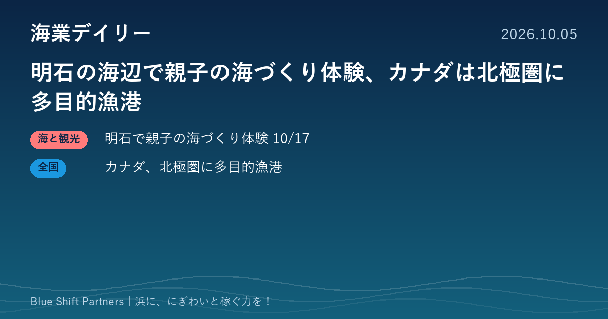

2026.10.05
明石の海辺で親子の海づくり体験、カナダは北極圏に多目的漁港

本日は2件をお届けします。明石の海辺の施設で、釣り体験やマルシェを組み合わせた親子向けイベントが10月17日に開かれます。海外からは、カナダ政府が漁業と観光の両方を支える小型漁港の整備に乗り出したニュースです。
明石T3テラスで10月17日に「親子で学ぶ豊かな海づくり体験」
兵庫県明石市の海辺の施設「明石T3テラス」で、2026年10月17日（土）9時〜16時に「親子で学ぶ豊かな海づくり体験in明石T3テラス」が開かれます。真鯛の釣り体験、海上保安庁の制服試着、陸上自衛隊の装備品展示、ステージやマルシェなどが予定され、入場は無料（一部の体験・飲食は有料）です。主催は明石T3テラス（株式会社マインズ）で、兵庫県東播磨県民局と明石市が後援しています。
ここがポイント：釣り体験に、ステージやマルシェを重ねて家族連れを呼び込む組み立ては、漁港や海辺の施設で集客イベントを企画するときの参考になります。行政の後援を得て、学びの要素を入れている点もポイントです。
出典：株式会社マインズ（PR TIMES）「親子で学ぶ豊かな海づくり体験in明石T3テラス」（2026-09-30）
カナダ政府、北極圏アークティックベイに多目的の小型漁港を整備
カナダ水産海洋省は2026年10月2日、ヌナブト準州アークティックベイに新しい多目的の小型漁港を整備するため、7,700万カナダドル超を投じると発表しました。防波堤、スロープ、大型船向けの固定岸壁、小型船向けの浮桟橋、泊地と航路のしゅんせつを含みます。工事は2026年8月に始まり2029年まで続き、2030年の開氷期からの供用を見込んでいます。漁業に加え、海上輸送、文化活動、観光などの機会を広げる狙いとされています。
ここがポイント：漁港を漁業だけでなく観光や地域の暮らしを支える拠点として整備する考え方は、日本の海業と通じます。地元の先住民団体や村と連携し、地元資本の企業が工事を担う点も、地域に稼ぎを残す工夫として参考になります。
出典：カナダ水産海洋省（カナダ）「Government of Canada invests in new small craft harbour in Arctic Bay, Nunavut」（2026-10-02）
明石の例のように、釣りや食に音楽やマルシェを組み合わせると、ふだん海に来ない家族連れも足を運びます。漁港の「にぎわい」は、一度来た人がまた来たくなる仕掛けづくりから。小さなイベントでも、来場者数や売上を記録して次の企画に生かすことが、稼ぐ力への近道です。